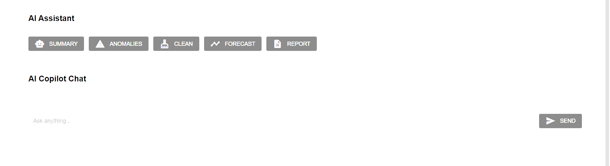

Interactive Data Processing
Import, clean, harmonize and synchronize datasets from Sartorius bioreactors, BioLectorXT systems, gas analyzers, CSV and Excel files through an intuitive NiceGUI interface.
Raw2Ready is an open-source framework designed to harmonize, preprocess, visualize, annotate and intelligently explore industrial biotechnology datasets generated from heterogeneous fermentation equipment.

Import, clean, harmonize and synchronize datasets from Sartorius bioreactors, BioLectorXT systems, gas analyzers, CSV and Excel files through an intuitive NiceGUI interface.

Generate publication-quality plots, perform statistical analysis, detect outliers, inspect missing values and explore fermentation dynamics interactively.

Combine experimental datasets, metadata, BacDive knowledge, scientific literature and external resources using collaborative AI agents for evidence-based reasoning.
Raw2Ready provides an integrated environment for the complete experimental data lifecycle.
Import and standardize heterogeneous datasets.
Synchronize asynchronous time-series automatically.
Create derived process variables using formulas.
Explore experiments through collaborative reasoning.
Raw2Ready integrates data harmonization, metadata annotation, statistical analysis and AI agents into a unified framework for industrial biotechnology.